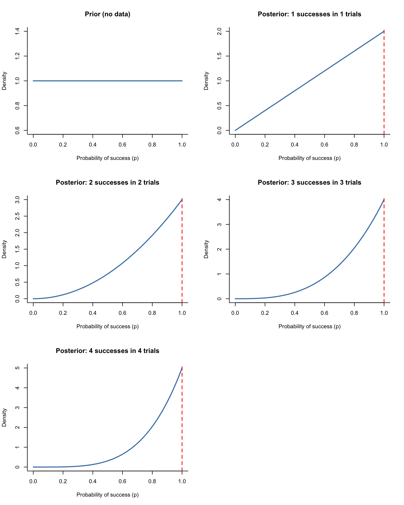
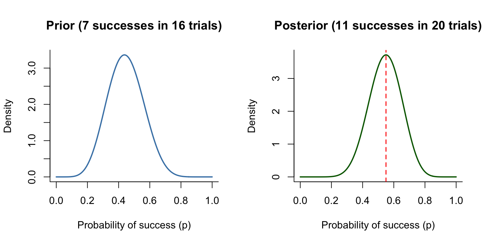
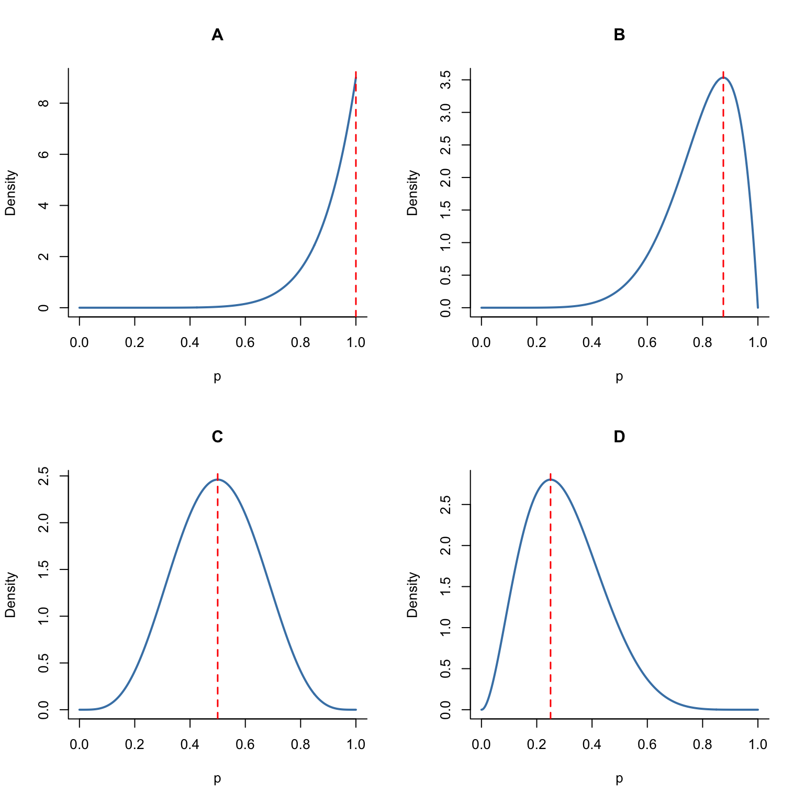

QR-I Assignment 6
Chapters 7, 9, and 10 of the QR-A book
WarningRemember to hand in your work …
At any point, you can submit your answers by collecting them and uploading them to the class site.
No answers yet collected
If requested by your instructor, please identify here the people from whom you received assistance on this assignment.
If the answers that have been loaded automatically are not yours, press this button before starting your work:
NoteDrill for Chapter 7 (Uncertainty in quantities)
Open drill questions in this document
Remember to submit your drill answers through that document. But for the exercises in the present document, use the “collect answers” at the top of this page.
NoteDrill for Chapter 9 (Likelihood)
Open drill questions in this document
Remember to submit your drill answers through that document. But for the exercises in the present document, use the “collect answers” at the top of this page.
NoteDrill for Chapter 10 (Hypothesis and likelihood / Bayes)
Open drill questions in this document
Remember to submit your drill answers through that document. But for the exercises in the present document, use the “collect answers” at the top of this page.
NoteChapters 7, 9, and 10 — Exercises
These exercises draw on uncertainty in quantities (Ch 7), likelihood (Ch 9), and Bayesian updating (Ch 10).
Exercise 1 You’re trying to predict the outcome of a football game, updating your predictions as the game proceeds. The competing hypotheses here are the possible end scores for your team: 2, 3, 4, 5, 6, 7, 8, 9, …, 100, 100+. I don’t know which is your team and what are your beliefs about it, so I can’t tell you much about what relative probability you assign to each of these 100 possible outcomes, but you have your own views, well informed or not.
Purely for the sake of simplicity, let’s consider just these 20 hypotheses: the scores 5 through 24, with equal relative probability assigned to each: 1.
A. You don’t need to translate this relative probability distribution into an (absolute) probability, but if you were to do so, what would it be?
jsp-A-3982
Now it’s half-time. Your team has a score of 10 pts. To update your before-the-game opinion, you need to multiply that relative probability by a likelihood function: What is the probability of the half-time outcome given each of the hypotheses.
B. Some of the hypotheses can be assigned zero likelihood given the half-time observation. Which are these?
jsp-B-3843
C. What’s a better name for relative probability distribution that encodes your “before-the-game opinion” on your team’s score?
jsp-C-k3ks
D. What’s a proper name for your updated distribution of relative probabilities taking into account the half-time score?
jsp-D-3l2s
Exercise 2 Consider a bad movie plot organized along these lines: The protagonist has a disturbing dream that the universe has changed from “Normal” to a new state: “Doom.” Doom was hitherto thought impossible. Doom and Normal constitute two hypotheses about the state of the universe.
To say that a hypothesis is impossible is equivalent to assigning it probability zero. That’s what everyone else believes, but our protagonist, on account of his dream, assigns Doom the rhetorical odds “one-in-a-million.”
- If an outcome has probability zero, what are the odds of that outcome?
des-1-ckd
Now, in typical movie fashion, the protagonist starts to observe events—call them “strange events”—that shouldn’t be happening. In the Doom universe, such events have a high likelihood. But in the normal universe they could also be observed due to optical illusions, distraction, or tricks played by the neighborhood children who think the protagonist is crazy. Let’s assign each observed strange event a likelihood ratio of 2 in favor of Doom.
- Explain what feature of Bayesian reasoning allows evidence to be in favor of a hypothesis that we believe is impossible.
- Translate a likelihood ratio of 3 according to the verbal scale for evidence:
des-3-lfs
The Bayesian updating calculation has a particularly simple mathematical form when the prior probability is stated in terms of odds.
\[\text{posterior odds} = \text{prior odds} \times \text{likelihood ratio} .\]
For the character who claims that the prior odds of Doom is zero, the posterior odds must always remain zero regardless of the likelihood ratio. In the movies, such a character always ends up dying in a dramatic way, just punishment for his skepticism.
- For our protagonist, who started with a prior odds of one-in-a-million, the posterior odds after one such “strange” event will be what?
des-4-sot
Our protagonist starts to encounter other “strange” reports, hearing about them on the radio, seeing them in news reports from diverse locations, and so on. For the skeptic, these are all of no import. It is impossible to move the skeptic off his prior odds of zero. But our protagonist takes them seriously. Or, at least, he is willing to fold them in to a Bayesian calculation.
- After five strange events (in total), what should be our protagonist’s posterior odds? (Pick the closest answer.)
des-5-hjw
- Another five strange events are observed, making 10 in all. What should be our protagonists posterior odds?
des-6-yqe
Exercise 3 Prior and posterior: the ICBM-style example (from class and the book)
This exercise revisits the example from class and the book in which we learn an unknown probability of success (p) by starting with a prior distribution and updating with data to get a posterior distribution.
We use a uniform prior: before seeing any data, we treat every value of (p) between 0 and 1 as equally plausible. When we observe (k) successes in (n) trials, Bayesian updating gives a posterior distribution: the density is highest where the data suggest (p) is likely to be.
Part 1: Flat prior, then 4 consecutive successes
The figure below shows the prior (no data) and then the posterior after 1 success in 1 try, 2 in 2, 3 in 3, and 4 in 4. The red dashed line in each posterior plot shows the fraction of successes so far ((k/n)).

Part 2: Informative prior from past data, then 4 new successes
Sometimes we already have past data. Suppose we had 7 successes in 16 trials and we use that to form our prior (no longer flat). Then we run 4 more trials and get 4 successes (11 successes in 20 trials total). The figure below shows the prior (based on 7/16) and the posterior after updating with the new data (11/20).

Part 3: More data — which posterior is correct?
Suppose we had 4 successes in 4 trials (as in Part 1). We then run 4 more trials and get 3 successes (7 successes in 8 trials total). The figure below shows four possible posteriors labeled A, B, C, and D. Only one of them is the correct posterior after 7 successes in 8 trials.

Comprehension questions
- In Part 1, the first plot is “Prior (no data).” What does that plot represent?
hcf-prior
- As we go from 1/1 to 2/2 to 3/3 to 4/4 in Part 1, what happens to the posterior?
hcf-sharpen
- In Part 2, we use a prior based on 7 successes in 16 trials, then see 4 more successes in 4 trials (11/20 total). Why is the posterior in Part 2 not as concentrated near 1 as the “4 successes in 4 trials” posterior in Part 1?
hcf-informative
- If we had started with a uniform prior and then observed 11 successes in 20 trials, we would get a posterior centered near 11/20. How would that posterior compare to the one in Part 2 (which used a 7/16 prior then 11/20)?
hcf-compare
- In Part 3, we had 4 successes in 4 trials, then 3 more successes in 4 more trials (7 in 8 total). Which panel (A–D) in the figure shows the correct posterior for 7 successes in 8 trials?
hcf-choose-plot
- Suppose we had 2 successes in 4 trials. We then run 2 more trials and get 2 more successes (4 successes in 6 trials total). What happens to the posterior?
hcf-more-data
- We have a prior based on 7 successes in 16 trials (as in Part 2). We then see 2 more trials and get 2 successes (9 successes in 18 trials total). How does this new posterior (9/18) compare to the posterior in Part 2 (11/20)?
hcf-update-compare
:::::